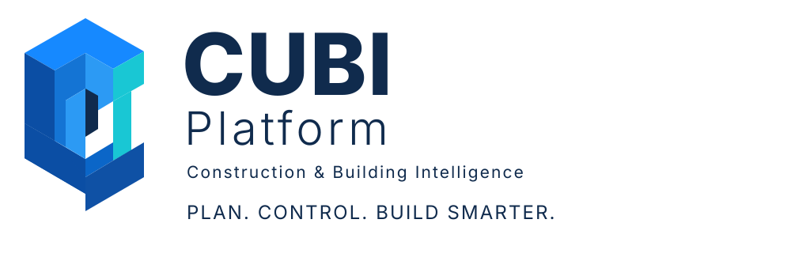

Planning & scheduling
Organize work breakdown structures, activities, calendars, relationships, baselines and progress in a schedule-centered workflow.

CUBI PLATFORM
A construction-focused workspace for organizing the plan, tracking delivery and bringing project information closer to decisions.
Organize work breakdown structures, activities, calendars, relationships, baselines and progress in a schedule-centered workflow.
Bring milestones, schedule status, performance indicators and project decisions into one consistent operating view.
Connect resource planning, cost visibility, progress evidence and performance reporting as the underlying capabilities become available in your workspace.
Keep project records, contract information and supporting evidence close to the activities and decisions they inform.
Use project context to help organize information, prepare summaries and support user-directed project workflows.
Build a shared view across planning and project information with clear boundaries between public product pages and workspace data.
Explore the CUBI workspace and its connected project-control workflow.